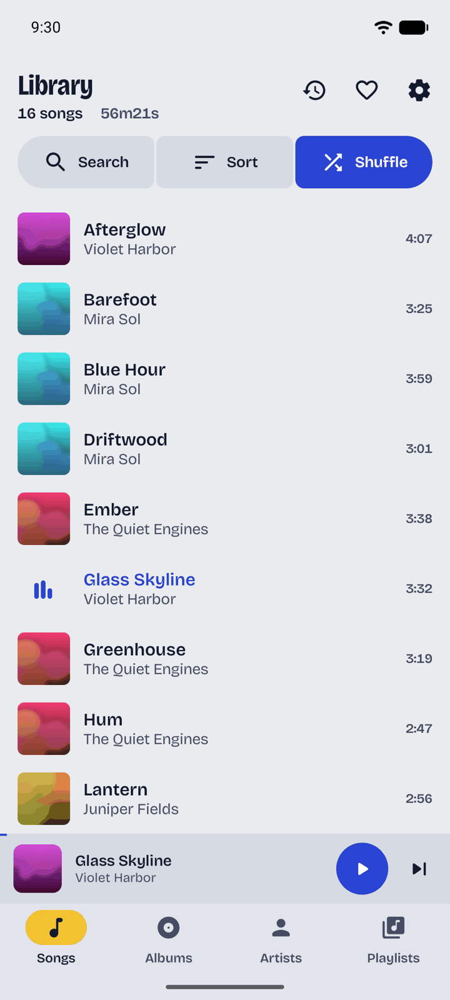
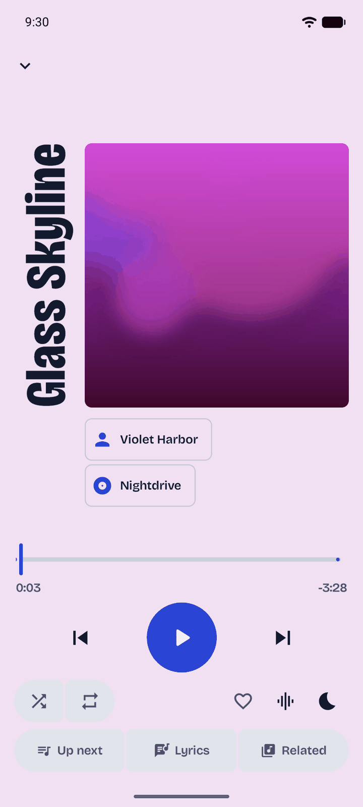
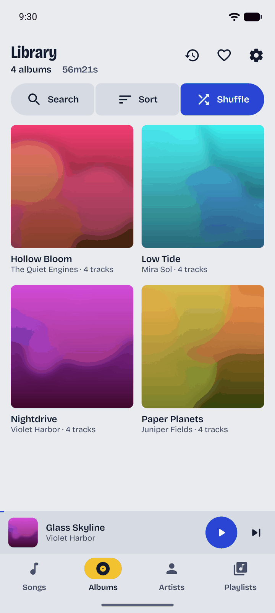
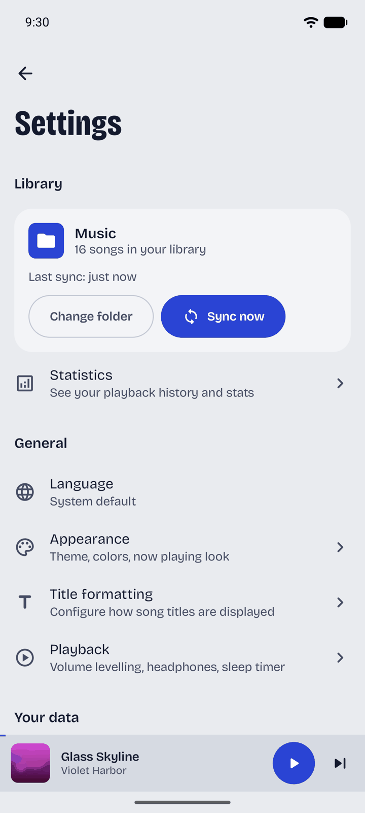

Play the music you own.
SonoraKMP is a music player for Android that plays the files on your phone. No account, no analytics, no uploads.
What it does
Library
- Local library and folder sync
- Point SonoraKMP at your music folders. Files are never copied, and re-scans skip anything unchanged.
- Playlists and M3U
- Drag to reorder, swipe to remove, and import or export standard M3U files.
- Favourites and history
- Heart what you love and find what you played last night in one tap.
- Listening stats
- Total time, top songs, artists and albums and your busiest day, all worked out on your phone.
Playback
- Background playback
- Keeps playing with the screen off, with full controls in the notification and on the lock screen.
- Gapless
- Live albums and DJ mixes play straight through, with no gap between tracks.
- ReplayGain
- Track or album levelling, so loud and quiet records sit at the same volume.
- Synced lyrics
- Reads .lrc and .txt files next to your songs. Lines follow along, and a tap jumps to that moment.
- Equalizer, speed and pitch
- A multi-band EQ with presets, plus one-tap moods from Super Slowed to Nightcore.
- Sleep timer
- Pick a preset or your own time, or stop after this song, with a gentle fade at the end.
- Home screen widget
- See what’s playing and control it without opening the app.
Yours
- Private by design
- No account, no analytics, no uploads. SonoraKMP only talks to GitHub, for the changelog and updates.
- Backup and restore
- Move playlists, favourites, stats and settings to a new phone with one JSON file.
- English and Japanese
- Follows your system language, or pick one in Settings.
- Your colours
- Sleeve by default, or Material You, colours from the album art, your own accent and pitch black.
- Updates from GitHub
- SonoraKMP checks GitHub releases and installs the right build for your device. No store needed.
How it looks

Home 
Now Playing 
Library 
Settings
Download
Download the APK from GitHub and open it on your phone. Android may ask you once to allow installs from your browser. After that, SonoraKMP updates itself from inside the app.
Needs Android 7.0 or newer.